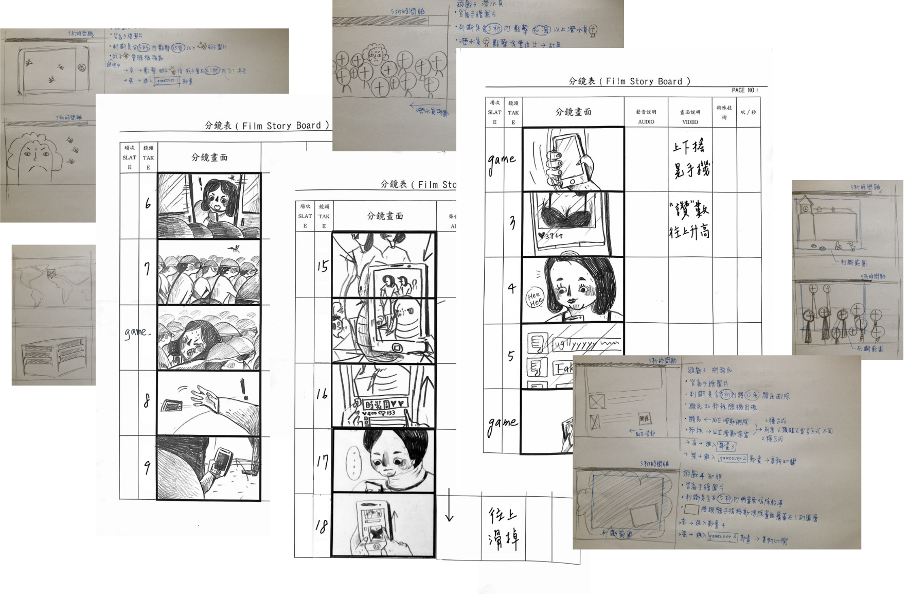

ECOLOGY LABORATORY APP
OVERVIEW
There is no denying that people intend to represent a perfect impression on social media. In our research, 44% of adults spend over four hours every day on social media. They used to share their emotions and would like to connect with others. However, reading those posts does not always make people feel positive emotions.
In this project, we conducted a focus group with Facebook users to understand their reactions when reading different posts. We created an interactive story application to demonstrate findings after analyzing feedback. By doing so, this game can evoke empathy in creators to have good social media etiquette.
AWARDS
-
Best Design of the Year (1st place overall out of 4,462 projects)
Issued by Taiwan Design Research Institute · Aug 2016
-
Innovation Game Design (2nd place overall out of 1,089 projects)
Issued by Taiwan Ministry of Economic Affairs · Aug 2016
RESEARCH
After social media make rapid and convenient communication, a post can let people stay in touch with current friends and family members. However, some people use technology to abuse others by sending uncomfortable or annoying posts and are accustomed to, then gradually assimilating with this behavior pattern. Eventually, this became a current social media phenomenon.
Questionnaire
A questionnaire survey was created to identify users' emotional reactions to types of posts. We found:
- Many people like to see beauty selfies. However, they disagree with the post when the selfie is not associated with the content.
- Women feel uncomfortable when they see other women post revealing selfies with cutesy content.
- The most annoying type of Facebook post for users is slfies(51%), then show off(33%), whining(9%), and others(7%).
Social Media Community V.s Bio Community
We also found that social media triggers users' satisfaction when receiving feedback from others and encourage them to create new Selfies or annoying post. This cycle also happens in Bio Community. Some hematophagous, like leeches or mosquitos, draw off the blood of another animal or a person to feed themselves.
Social Media Users & Hematophagous Creatures
So what kind of hematophagous creatures can represent those social media creators? We matched the characteristic of leeches, fleas, and mosquitos to those of selfies, show-offs, and whining creators.
Leech <-> Selfies Posts
Leeches have the same characteristics as people who often post selfies. They seem harmless but have significant lethality, and they can gain energy from other species and survive without energy for a long time.
Fleas <-> Show-off Posts
Fleas have highly developed jumping legs that allow leaping horizontal or vertical distances 200 times their body length. People always be surprised at how tiny fleas are. Fleas' traits seem like show-off post creators who love to share their wealth or status. No matter how small things they buy want to let people recognize them.
Mosquito <-> Whining Posts
Mosquitoes are sensitive to environmental change. They often make annoying whining sounds like people who love to whine about everything and anything they can, and they want to attract others' attention by doing so.
DESIGN
Story Board
Functional map
Overall, 40 plots and 11 interactive games in the application. To explore interaction and confirm that users can go to the correct page, we created a functional map that allows us to overview each user flow.
Animation & Programming
We designed all elements in Photoshop and pulled all into Flash to compose animation. By doing so, we were able to build the game with ActionScript. Although, ActionScript is not the best programing language for developing a mobile application. It has a shallow learning curve and allows us to control objects visually.


Poster
Let people aware of eye problems such as eye floaters or myopia caused by using mobile.
Business Card
The design concept of the business card is a petri dish commonly used to study microorganisms in laboratories. Each member's business card has a part of the microorganisms' pattern. People can collect all members' cards and fold them to see the final design.
LAUNCH!
After we created the game, we converted the format from Flash to APK. Users were able to download an application on Google play. We called this game "生態實驗室" and aimed to evoke empathy in creators to have good social media etiquette. Users can play in three interactive stories to understand the complex ecosystem of the social media group. We hope the insights we provided in the game can encourage users to create good content on social media and make a better environment for others.